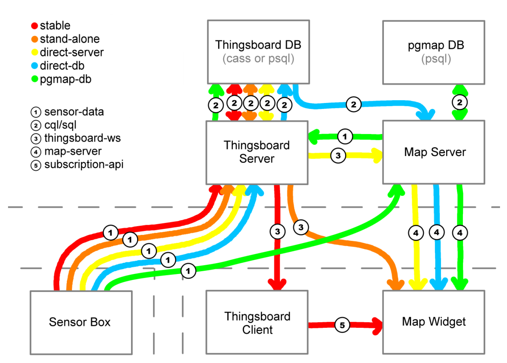
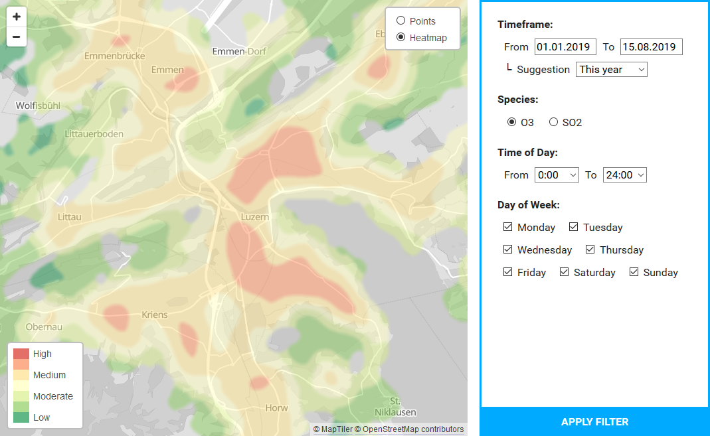
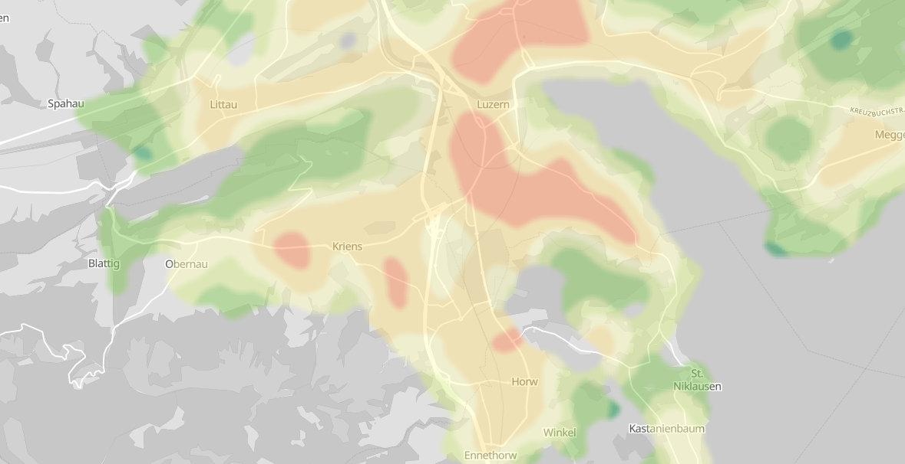

To get a master's degree in mechanical engineering from ETH Zürich one must do an internship in industry. I landed mine for 4 months at Engie Schweiz AG (nowadays EQUANS Schweiz). They had a project in development where municipality cars driving around a city would continuously measure air quality data. I was simply handed a task: visualize said data on a map on a webpage. Sounds simple enough, but the problem was that it should work for up to 4'200'000 datapoints and still be responsive (24 vehicles submitting measurements every 3 minutes for 8 hours a day during 1 year). Admittedly they didn't really expect me to reach that goal, but I wanted to.
I tried many different database types and structures, and many different data routes to get the map to the client. At the end I saw it as necessary to implement my own server (C++) to filter and pre-aggregate the data requested by the client on demand. This resulted in a somewhat acceptable loading time of 3.4s in the worst-case scenario. A large improvement over the 2min needed by the "official" API.
The second big problem of this project was, now that the data was at the client's browser, how to display it? Each data point has a coordinate and value, so one could think to just use a heatmap, but these plot the density of data points. What I wanted was the average value of the data points around any particular pixel. This was a lot harder and required me implementing a custom shader in WebGL (meaning on the graphics card) to have any chance of running smoothly. And the final product did manage to reach 30fps even on somewhat older smartphones! I don't really want to go into too much detail, but here below are images of the various render passes, if someone wants to try and piece together how the final result was achieved.
